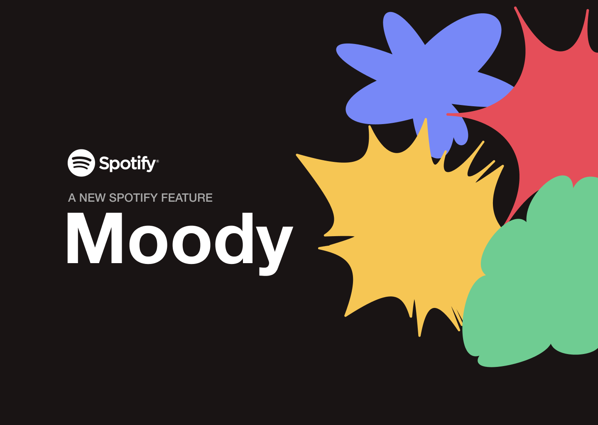
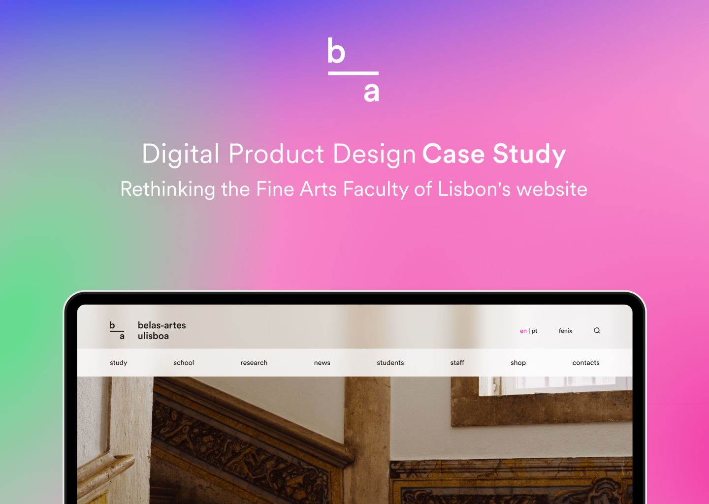
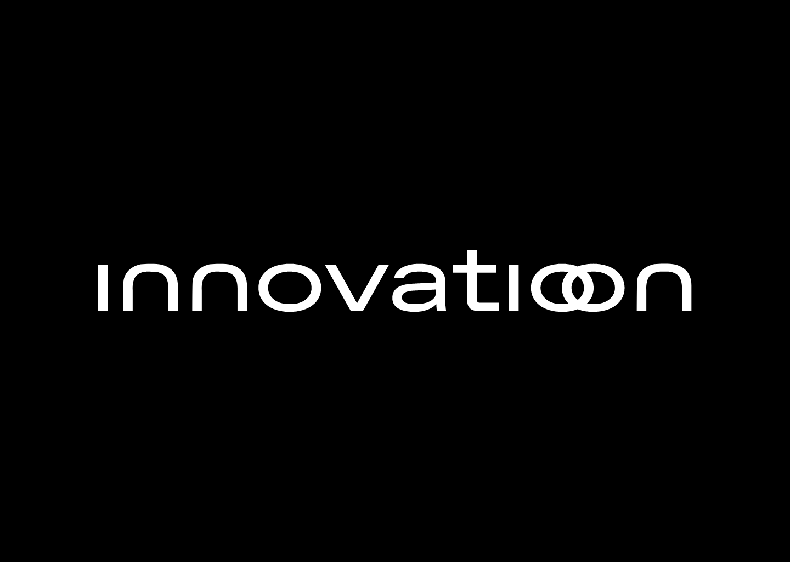

<!DOCTYPE html>
<html lang="en">
<head>
    <meta charset="utf-8">
    <meta name="viewport" content="width=device-width, initial-scale=1.0">
    <meta http-equiv="X-UA-Compatible" content="ie-edge">
    <title>Marta Aleixo Portfolio</title>
    <link rel="stylesheet" href="assets/css/style.css">
    <link rel="preconnect" href="https://fonts.googleapis.com">
    <link rel="preconnect" href="https://fonts.gstatic.com" crossorigin>
    <link rel="preconnect" href="https://fonts.googleapis.com">
    <link rel="preconnect" href="https://fonts.gstatic.com" crossorigin>
</head>
</html>
<body>
<header>
    <div class="container-2">
        <h1><a href="index.html" id="intro">marta aleixo</a></h1>
        <button class="btn--toggle-menu">
<svg xmlns="http://www.w3.org/2000/svg" width="24" height="24" viewBox="0 0 24 24" fill="none" stroke="currentColor" stroke-width="2" stroke-linecap="round" stroke-linejoin="round" class="feather feather-align-justify"><line x1="21" y1="10" x2="3" y2="10"></line><line x1="21" y1="6" x2="3" y2="6"></line><line x1="21" y1="14" x2="3" y2="14"></line><line x1="21" y1="18" x2="3" y2="18"></line></svg>        </button>
        <nav id="main-navigation">
            <ul>
              <!-- <li class="menu-nav_item active"><a href="index.html">home</a></li>-->
                <li class="menu-nav_item"><a href="work.html" class="menu-nav_link">work</a></li>
                <li class="menu-nav_item"><a href="cv.html" class="menu-nav_link">cv</a></li>
                <li class="menu-nav_item"><a href="about.html" class="menu-nav_link">about</a></li>
                <li class="menu-nav_item"><a href="contacts.html" class="menu-nav_link">contacts</a></li>
            </ul>

        </nav>
    </div>
</header>


<!-- <header>
    <div class="container">
        <h1><a href="index.html">marta aleixo</h1>
        <nav id="main-navigation">
         colocar em comentario ---- <ul class="menu-nav"> 
                <ul>
                <li class="menu-nav_item active"><a href="index.html">home</a></li>
                <li class="menu-nav_item"><a href="work.html" class="menu-nav_link">work</a></li>
                <li class="menu-nav_item"><a href="cv.html" class="menu-nav_link">cv</a></li>
                <li class="menu-nav_item"><a href="about.html" class="menu-nav_link">about</a></li>
                <li class="menu-nav_item"><a href="contacts.html" class="menu-nav_link">contacts</a></li>
            </ul>
        </nav>
    </div>
</header>-->    <main class="container">
        <section class="work"></section>
        <figure class="work">
            
        </figure>
        <!-- ======= case 1 ======== -->
        <div class="projects">
            <div class="title">
                <h4>moody, Spotify</h4>
                <ul>
                    <li class="menu-nav_item"><a href="moody.html" target="_blank" class="menu-nav_link">know more ↗</a></li>
                </ul>
            </div>

            <div class="detail">
                <div>Digital Design</div>
                <div>2023</div>
            </div>

            <div class="description">
                <p class="resume">Moody is a well-being tool to help
                    users improve their mood. It was created to provide emotional support
                    and offer different music experiences interactively. It was created to provide emotional support
                    and offer different music experiences interactively.</p>
            </div>
        </div>
        <!-- ======= case 2 ======== -->
        <section class="work"></section>
        <figure class="work">
            
        </figure>
        <div class="projects">
            <div class="title">
                <h4>fbaul, website re-design</h4>
                <ul>
                    <li class="menu-nav_item"><a
                            href="https://www.behance.net/gallery/167709799/Rethinking-the-Fine-Arts-Faculty-Website-Case-Study" target="_blank"
                            class="menu-nav_link">know more ↗</a></li>
                </ul>
            </div>

            <div class="detail">
                <div>Digital Design</div>
                <div>2022</div>
            </div>

            <div class="description">
                <p class="resume">The aim of this project was to develop a concrete
                    proposal to improve the users experience on the desktop version of
                    the Fine Arts Faculty of the University of Lisbon’s website, according to the needs and frustrations
                    of our target segment: the applicants.</p>
            </div>
        </div>

        <!-- ======= case 3 ======== -->
        <section class="work"></section>
        <figure class="work">
            
        </figure>
        <div class="projects">
            <div class="title">
                <h4>Innovation, Consulting</h4>
                <ul>
                    <li class="menu-nav_item"><a
                            href="https://www.behance.net/gallery/138419527/Innovation-Business-Consulting" target="_blank"
                            class="menu-nav_link" class="menu-nav_link">know more ↗</a></li>
                </ul>
            </div>

            <div class="detail">
                <div>Digital Design</div>
                <div>2020-2021</div>
            </div>

            <div class="description">
                <p class="resume">Innovation was a project developed in the scope of ETIC's Web Design course. The goal
                    was to develop a digital product based on an existing brand. It created the visual identity: the
                    logo and the website.</p>
            </div>
        </div>

        <!-- ======= case 4 ======== -->

        <section class="work"></section>
        <figure class="work">
            
        </figure>
        <div class="projects">
            <div class="title">
                <h4>Untangler</h4>
                <ul>
                    <li class="menu-nav_item"><a
                            href="https://www.behance.net/gallery/155232389/UNTANGLER-Job-Titles" target="_blank"
                            class="menu-nav_link" class="menu-nav_link">know more ↗</a></li>
                </ul>
            </div>

            <div class="detail">
                <div>Digital Design</div>
                <div>2021</div>
            </div>

            <div class="description">
                <p class="resume">Untangler helps design students, professionals 
                    and companies to find roles and skills in the digital design field 
                    based on quizzes and the selection of the main skills.</p>
            </div>
        </div>
    </main>
<footer>
    <p class="copy">©marta aleixo 2023</p>
</footer>
<script src="/assets/js/script.js"></script>


</body>

</html>